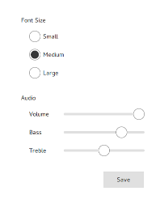
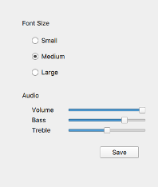
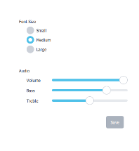
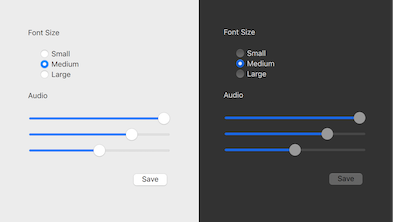
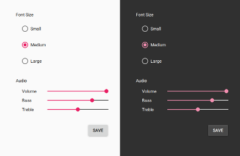
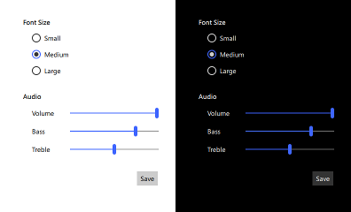
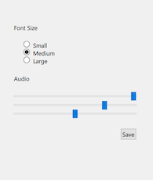

Styling Qt Quick Controls
Available Styles
Qt Quick Controls comes with a selection of styles.
Basic Style

The Basic Style is a simple and light-weight all-round style that offers the maximum performance for Qt Quick Controls.
Fusion Style

The Fusion Style is a platform-agnostic style that offers a desktop-oriented look and feel for Qt Quick Controls.
Imagine Style

The Imagine Style is based on image assets. The style comes with a default set of images which can easily be changed by providing a directory with images using a predefined naming convention.
macOS Style

The macOS Style is a native-looking style for macOS.
Note: this style is only available for applications running on macOS.
Material Style

The Material Style offers an appealing design based on the Google Material Design Guidelines, but requires more system resources than the Basic style.
Universal Style

The Universal Style offers an appealing design based on the Microsoft Universal Design Guidelines, but requires more system resources than the Basic style.
Windows Style

The Windows Style is a native-looking style for Windows.
Note: this style is only available for applications running on Windows.
Using Styles in Qt Quick Controls
There are two ways of using styles in Qt Quick Controls: run-time style selection and compile-time style selection.
Compile-Time Style Selection
Compile-time style selection involves using QML imports to specify the style. For example, to import the Material style:
import QtQuick.Controls.Material ApplicationWindow { // ... }
Notice that QtQuick.Controls (which is responsible for run-time style selection) is not imported. The fallback style is specified by the qmldir of the style:
module QtQuick.Controls.Material # ... import QtQuick.Controls.Basic auto
The benefit of compile-time style selection is that the QtQuick.Controls plugin is not used and therefore does not need to be deployed with the application.
Explicit imports are also necessary if your application is built statically.
Run-Time Style Selection
Run-time style selection involves importing QtQuick.Controls:
import QtQuick.Controls
The QtQuick.Controls plugin will import the style and fallback style that were set at runtime via one of the following approaches:
- QQuickStyle::setStyle()
- The
-stylecommand line argument - The
QT_QUICK_CONTROLS_STYLEenvironment variable - The
qtquickcontrols2.confconfiguration file
The priority of these approaches follows the order they are listed, from highest to lowest. That is, using QQuickStyle to set the style will always take priority over using the command line argument, for example.
The benefit of run-time style selection is that a single application binary can support multiple styles, meaning that the end user can choose which style to run the application with.
Using QQuickStyle in C++
QQuickStyle provides C++ API for configuring a specific style. The following example runs a Qt Quick Controls application with the Material style:
QQuickStyle::setStyle("Material");
See the detailed description of QQuickStyle for more details.
Command line argument
Passing a -style command line argument is the convenient way to test different styles. It takes precedence over the other methods listed below. The following example runs a Qt Quick Controls application with the Material style:
./app -style material
Environment variable
Setting the QT_QUICK_CONTROLS_STYLE environment variable can be used to set a system-wide style preference. It takes precedence over the configuration file mentioned below. The following example runs a Qt Quick Controls application with the Universal style:
QT_QUICK_CONTROLS_STYLE=universal ./app
See Supported Environment Variables in Qt Quick Controls for the full list of supported environment variables.
Configuration file
Qt Quick Controls support a special configuration file, :/qtquickcontrols2.conf, that is built into an application's resources.
The configuration file can specify the preferred style (may be overridden by either of the methods described earlier) and certain style-specific attributes. The following example specifies that the preferred style is the Material style.
[Controls] Style=Material
See Qt Quick Controls Configuration File for more details about the configuration file.